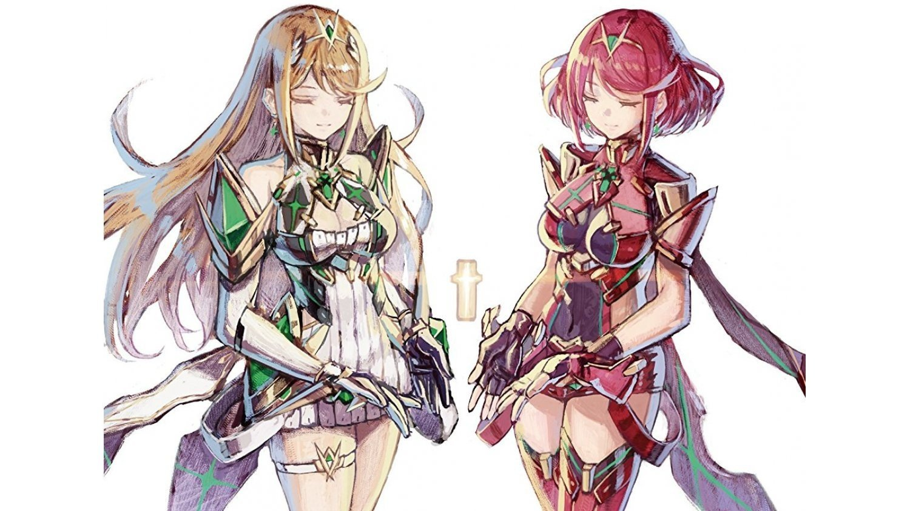

GAMES!!
XENOBLADE 2
PERSON 5

Differences betweens JRPG and RPG
Beleive it or not, JRPGs and RPGs usally have similar if not the same mechanics, so what makes them different? You see the Japanese took their inspiration from their already pre-established game genre of Visual Novels and built upon that.
So the actual difference between the two is that JRPs focus more on storytelling trhough well established characters. whilst WRPGs (western role playing games) focus more on letting thir player live out their fantasises and express their character the way they want.
JRPGs tell the player a story through the eyes of one of the characters. While WRPGs let the player choose what kind of person they want that character to be and then the game shows the player how the story plays out with their character.